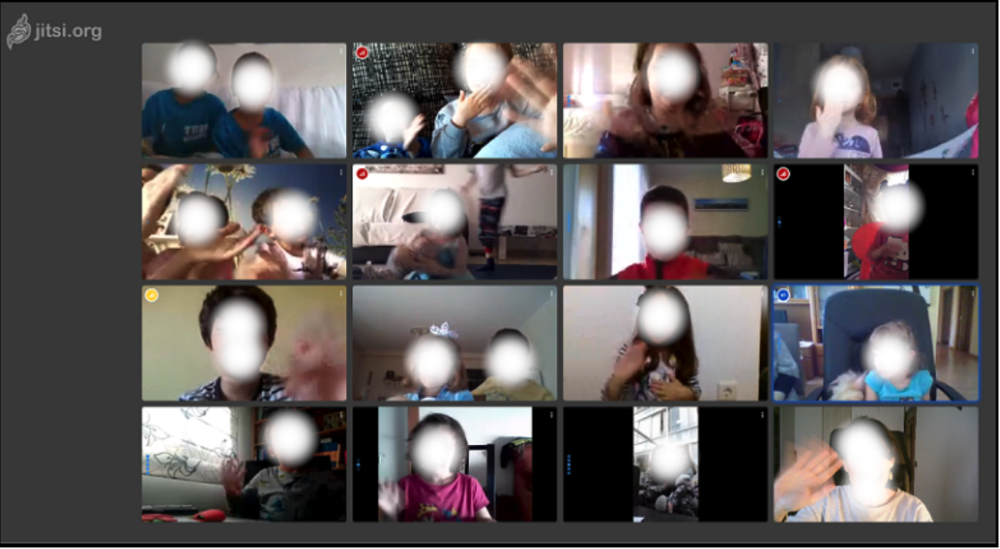
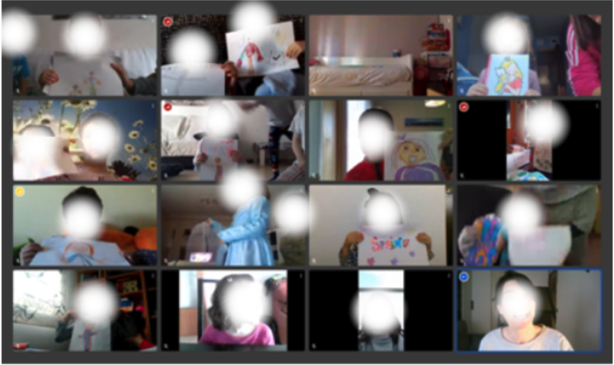

Hacemos una "asamblea online" en infantil: Mar Díez

Una de las actividades más significativas en Infantil es la ASAMBLEA. Por tanto, la idea de “retomarla”, adaptándonos a la actual situación, era importante. Para empezar, la propuesta era hacer la primera parte de nuestra asamblea de todas las mañanas, en la que nos hablamos, nos contamos cosas… A partir de ahí, la videollamada parecía la opción más evidente ya que nos permitía una comunicación bidireccional y en un contexto más normalizado que el de un vídeo, por ejemplo. Ideas a tener en cuenta
Elección de la plataforma.
La primera recomendación desde CATEDU fue Jitsi.
La valoración de partida ya era buena, pero es importante probarla previamente y conocer qué nos ofrece; saber si se adapta a lo que queremos.
Mi percepción, tras usarla:
- Es intuitiva y sencilla. Aunque al principio estaban todos los niños-as con algún adulto que les ayudaba, al poco tiempo, ya no era tan necesario.
- Tiene una función estrella: poder silenciar todos los micrófonos, con lo que puedes establecer fácilmente los turnos de palabra. Sólo activa el micrófono el/la que habla.
- También resulta positivo poder vernos todos-as en la pantalla (en miniaturas).
- Es segura, gratuita y de código abierto. Además no requiere registrarse (la mayoría de las familias usaba ordenador). En dispositivos móviles se debe descargar la aplicación, pero es sencillo y rápido.
Anticipar un poco la actividad.
Un día antes de realizar la “asamblea online”, envié un correo electrónico a las familias explicándoles la propuesta, junto con unas sencillas instrucciones visuales con el funcionamiento básico de Jitsi (así los niños-as podían entender también la dinámica de la actividad).

Establecimos 2 turnos horarios (uno de mañana, a las 11´00, y otro de tarde, a las 18´00), para que todas las familias tuvieran opción a conectarse.
Planificar la videollamada.
Para empezar, la dinámica debía ser sencilla (lo importante es participar):
- Saludo general y bienvenida.
- Silenciar los micrófonos. En esta parte, explicar a las familias (y peques) un poquito más sobre JITSI (uso de los iconos) y la dinámica a seguir.
- Pedimos manos levantadas para el que quiera hablar (o pulsar icono de mano) y vamos diciendo el nombre de cada uno-a para que cuenten algo de estos días. Lo fundamental es que adquieran la dinámica de activar y desactivar el micro.
- Hacer, de vez en cuando, una “foto de grupo” con impresión de pantalla les hace mucha ilusión.
- Al finalizar, abrir todos los micrófonos para despedirnos es muy divertido...
Dependiendo del número de peques, la asamblea será más o menos larga. El tiempo también dependerá de lo acostumbrados que estén a esperar turno de palabra, a escuchar, etc. Con unos 10-15 peques, unos 20-30 minutos está bien.
Una vez hecha la asamblea, qué más me permite
En general, diría que, el simple hecho de vernos (especialmente con niños-as tan pequeños), de escucharnos y saber cómo estamos, ya es un objetivo tan positivo como para que merezca la pena realizar una videollamada.
A partir de ahí, nos va a permitir:
- “¡Tenemos el cole en casa!” (Inés, 4 años). Ya hemos establecido un espacio para reunirnos y sentirnos grupo-clase de nuevo. Ahora ya podemos plantear otro tipo de actividades: explicar alguna actividad, contar un cuento o realizar un reto todos-as a la vez (pudiendo grabar in situ).
- Facilita un espacio de encuentro para las familias y niños-as (independientemente del maestro-a), puesto que el enlace es siempre el mismo. Pueden conectarse libremente.
- Es un espacio que puede compartirse con los demás maestros-as del grupo. En nuestra asamblea, por ejemplo, la co-tutora British entró para saludar también a la clase.
- Podemos usarla como “tutoría online”. En esta situación, puede haber familias con muchas dudas o que estén pasando momentos difíciles, y poder hablar con ellas cara a cara es importante. Para ello, hemos creado una nueva sala, dejando libre la general.


Guía básica para videoconferencias por Varios autores bajo licencia Creative Commons Reconocimiento-NoComercial-CompartirIgual 4.0 Internacional License.